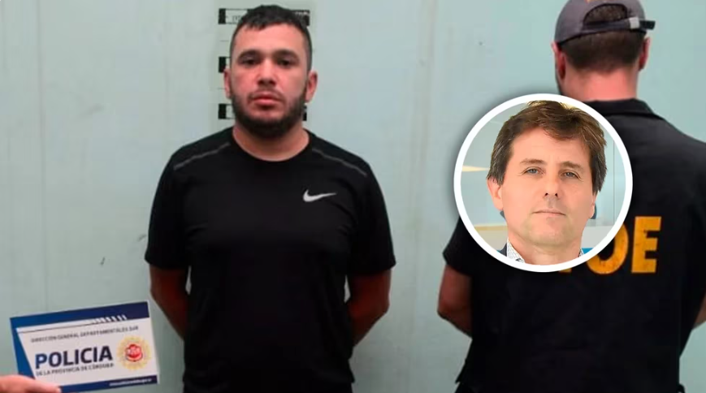

Rosario narco: "Alvarado no es un nene malo, es el producto de la complicidad estatal con el
crimen organizado"
Lo dijo el fiscal Luis Schiappa Pietra, que lidera la Agencia de Criminalidad Organizada del
Ministerio Público de la Acusación de Rosario y que logró la condena a perpetua para el capo
narco que intentó fugarse el pasado viernes en un helicóptero
